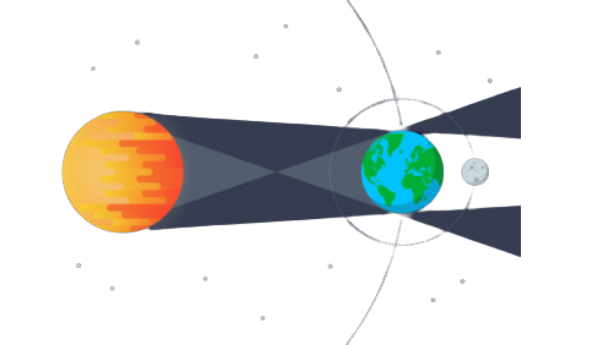

Eclipses
Cuando la luz se oculta y la sombra revela los secretos del cosmos. Descubre la danza precisa entre el Sol, la Tierra y la Luna.
¿Qué es un eclipse?
Un eclipse es un fenómeno astronómico que ocurre cuando un cuerpo celeste se interpone en la trayectoria de la luz de otro, proyectando una sombra sobre un tercero. En nuestro sistema, esto sucede cuando el Sol, la Tierra y la Luna se alinean de manera precisa.
Eclipse Solar
Luna entre Sol y TierraOcurre cuando la Luna pasa directamente entre el Sol y la Tierra, bloqueando total o parcialmente la luz solar. Solo puede suceder durante la Luna Nueva.

Eclipse Lunar
Tierra entre Sol y LunaSucede cuando la Tierra se interpone entre el Sol y la Luna, proyectando su sombra sobre la superficie lunar. Solo ocurre durante la Luna Llena.

Alineación Perfecta
La mecánica celeste en acción

Diagrama de alineación (Syzygy)
Para que se produzca un eclipse, la Luna debe estar en uno de sus nodos orbitales, los puntos donde su órbita cruza el plano de la órbita terrestre.
Fases del Eclipse
Primer Contacto
La sombra comienza a tocar el cuerpo celeste.
Totalidad / Máximo
El momento de mayor oscurecimiento.
Último Contacto
La sombra abandona completamente la superficie.
Duración
Un eclipse solar total puede durar hasta 7.5 minutos, mientras que uno lunar puede superar la hora.
Coincidencia Cósmica
El Sol es 400 veces más grande que la Luna, pero está 400 veces más lejos, por eso parecen del mismo tamaño.
Frecuencia
Hay entre 2 y 5 eclipses solares cada año, aunque los totales son raros en un mismo lugar.
Próximos Eclipses
| Fecha | Tipo | Visibilidad Principal |
|---|---|---|
| 14 Mar 2025 | Lunar Total | América, Europa, África |
| 29 Mar 2025 | Solar Parcial | Europa, Norte de Asia |
| 21 Sep 2025 | Solar Parcial | Pacífico Sur, Antártida |
| 03 Mar 2026 | Lunar Total | Asia, Australia, América |
| 12 Ago 2026 | Solar Total | Ártico, Groenlandia, Islandia, España |